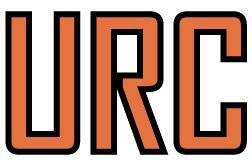

Our Mission:
RPI Rock Raiders is a student-run interdisciplinary team that promotes the advancement of engineering proficiency at Rensselaer Polytechnic Institute in Troy, NY. We aim to design and build innovative robotic systems to address challenges facing future exploration of deep space. For the 2017-2018 school year, our goal is to complete a Mars rover to compete in the Mars Society's University Rover Challenge.
About the Competition:
The Mars Society is an international organization that promotes the exploration and eventual settlement of Mars through public awareness, government funding, and efforts in the private sector. The University Rover Challenge (URC) hosted by the Mars Society is an annual competition which takes place at the Mars Desert Research Center in the deserts of southern Utah.
With work and experience from the NASA Sample Return Challenge, RPI Rock Raiders began design and construction of our URC rover last year. With the core rover systems nearing completion, we are confident we will be ready to compete in this year's competition.
Several universities around the world will be competing against the Rock Raiders in four tasks: science cache, extreme retrieval and delivery, equipment servicing and autonomous traversal. Each task will be scored with the potential to earn up to 500 points. The Rock Raiders is also responsible for presenting the rover to the judges. In this segment of the competition, the team will be judged on team structure, organization and management, core rover design and presented functionality, suitability of rover design to competition tasks, response to follow-up questions, and over quality of the presentation.
Following all of the scoring activities, the team with the highest collective score will be declared the winner. The winner receives the honor of presenting their rover at the International Mars Society Convention.
 For more information, please click on the logo to the right: